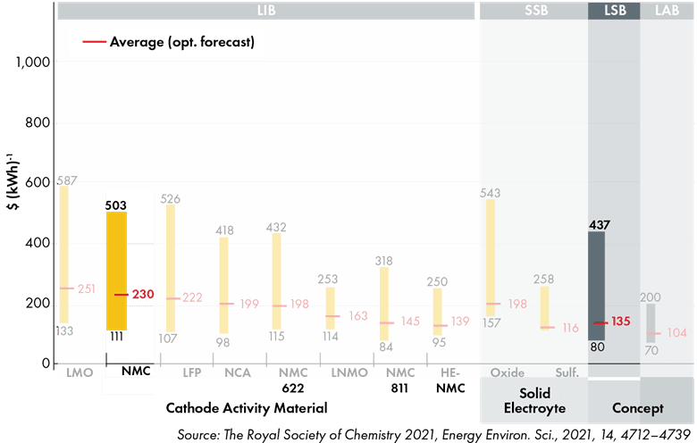
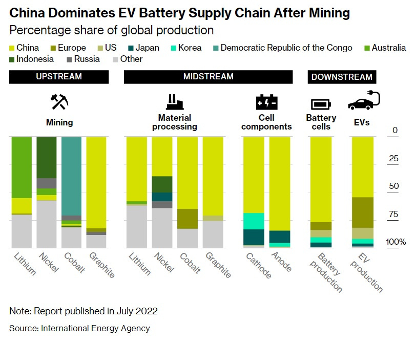

8 Batteries
The battery market has seen dozens of chemistries come and go, but four have stuck and scaled to achieve mass-market penetration: lead acid, nickel-cadmium (Ni-Cd), nickel-metal hydride (NiMH) and lithium-ion (Li-ion).
Most of the developing world still uses lead-acid batteries, a $45 billion global market. But lithium-ion batteries have been gaining ground rapidly in wealthy markets.
LIBs have hit on a combination of anode, cathode and electrolyte that performs well enough along several criteria (especially cost) to work for most short-duration applications today. They have become cheap, and manufacturing capacity has converged around them.
8.1 Lithium
8.1.1 Portugal’s Lithium Reserves
According to the European commission, Europe will need 60 times more lithium by 2050 (target year for carbon neutrality) for electric cars and energy storage alone, which is fueling an international race to extract lithium from the different sources where such deposits can be found, such as hard rocks, salt brines and geothermal water.
But for the people of Covas do Barroso, this scramble for raw materials and the prospect of an open-air mine translate into fears of deforestation, air pollution, water contamination, noise and an end to their way of life.
Interviews conducted by Euronews with a dozen residents, revealed that the vast majority of them were against mining lithium from the mountain rocks near their village, while a few were indifferent. No one was in favour.
“I think it won’t bring anything good,” said Paulo Pires, a local shepherd. “It will consume a lot of water, which we need for the sheep and for their fields. Instead of hearing birds, I will hear explosions, machines…there will be a lot of pollution.”
“I’m not against lithium. But I’m not in favour of polluting my village and other villages like mine in order to depollute cities” Pires added.
A study by the Portuguese University of Minho, conducted for Savannah Resources, found that Portugal’s 60,000 tons of known lithium reserves (0,4% of world’s reserves) are “insufficient to meet the demand for lithium derivatives for the production of batteries in Europe”. However, the report also adds that these reserves “are very relevant in reducing Europe’s dependence on other regions of the globe and increasing the security of Europe’s supply chain.”
8.2 Lithium-ion Batteries (LIBs)
Roberts
The global market for EV batteries alone is expected to hit almost $1 trillion by 2030. The more energy-dense, cheap and safe LIBs can get, the faster the electrification of transportation will happen. LIBs are being used both for distributed, building-level energy storage and for large, grid-scale storage installations.
The global storage market is expected to grow at an average of 31 percent a year over the coming decade, reaching 741 gigawatt-hours of cumulative capacity by 2030. The vast bulk of the demand for batteries is going to come from transportation
In 2019, the three chemists behind the initial development of lithium-ion technology won the Nobel Prize in chemistry. LIBs boast incredibly high energy density and specific energy, which is to say, they cram lots of oomph into a small, lightweight package, and they are capable of cycling many more times than their predecessors.
Lithium-ion battery pack prices, which were above $1,100 per kilowatt-hour in 2010, have fallen 89% in real terms to $137/kWh in 2020. By 2023, average prices will be close to $100/kWh. With foreseeable improvements in LIB chemistry, prices could hit $40 or even $30/kWh in coming decades. LIBs are going to hit limits, even if it’s just the base price of raw materials, before they become economical for long-duration grid storage. They are being installed for 4- to 6-hour storage applications, sometimes 8 hours, and someday may even aspire to 12 hours. But beyond that — for the weekly or even seasonal storage a renewables-based grid will need — some other technology or technologies will have to step in.
Before Tesla was founded, Li-ion batteries were almost exclusively used in consumer electronics — mainly laptops and cell phones. At the time of the launch of the Tesla Roadster in 2008, the total global Li-ion manufacturing capacity was approximately 20 GWh per year. By 2030, we expect over 2,000 GWh of annual production capacity based on already announced plans by cell manufacturers. That would be 100× growth in 22 years.
LIBs do face restraining pressures, especially materials and safety concerns.
LIBs have been around in commercial form since the early 1990s, though obviously they’ve improved quite a bit since then.
Today’s most common and popular LIBs use graphite (carbon) as the anode, a lithium compound as the cathode and some organic goo as an electrolyte. They boast two key advantages over prior battery chemistries.
First, they need very little electrolyte. They are what’s known as “intercalation” batteries, which means the same lithium ions nestled (intercalated) in the structure of the anode transfer to be intercalated in the cathode during discharge. The electrolyte only has to serve as a conduit; it doesn’t have to store many ions. Consequently, the cell doesn’t need much of it. Saving on electrolyte saves space and weight. (Bonus: The process is almost perfectly reversible, which gives LIBs their high cycle life.)
Second, LIBs squeeze lots of energy into a small space. Lithium is the lightest metal (at the upper left corner of the periodic table) and extremely energy-dense, so LIB cells can work with electrodes only 0.1 millimeters thick. (Compare lead-acid electrodes, which are several millimeters thick.) This also makes LIBs smaller and lighter.
Even the biggest grid battery is just stacks upon stacks of cells, like Lego bricks. LIBs are extremely modular — they can be scaled precisely to need.
The most common LIB chemistries used today are lithium nickel manganese cobalt oxide (NMC) and lithium nickel cobalt aluminum (NCA), which use compounds of those metals as the cathode. Lithium and nickel turn out to be a knockout combo: light and energy-dense.
Some batteries, particularly those with cobalt, are prone to “thermal runaway,” which means that if one cell goes haywire and heats up, it heats up the next one, and so on and so on in a self-reinforcing process that results in fires
List of LIB chemistries:
Lithium nickel manganese cobalt oxide (NMC cathode)
Lithium nickel cobalt aluminum (NCA cathode)
Lithium ferro phosphate or lithium iron phosphate (LFP cathode)
Lithium manganese oxide (LMO cathode) and lithium manganese nickel oxide (LMNO cathode)
Lithium sulfur (Li-S, sulfur cathode)
Lithium metal (anode) and solid state
Lithium titanate (LTO anode)
Lithium air (Li-air, lithium anode)
Cobalt, used in standard NMC and NCA chemistries, is highly toxic, comes almost entirely from the Democratic Republic of the Congo, and is mined in terrible working conditions that frequently spur charges of human rights abuses. Nickel and lithium are less nasty in and of themselves, but they may run into supply constraints as the market grows. (Nickel, in particular, is a source of current stress.)
Smart manufacturers such as Tesla and others are diversifying their battery lines in anticipation of supply issues, trying to evolve away from cobalt and attempting to secure a steady supply of lithium and nickel.
Sionic
Sionic is betting that its approach will prove to be easier and cheaper to adopt for the companies that have already sunk massive investment into their factories.
Instead of re-engineering silicon to tamp down on its propensity to expand and contract during cycling, Sionic uses low-cost micron silicon and designs around that property.
“If you fight physics, physics always wins,” said Sionic CTO Surya Moganty. “We are controlling, or engineering, that expansion of silicon so it does not cause problems.”
Sionic also leans on its corporate pedigree to design an electrolyte that’s optimized for safe performance with the new anode. That’s important, because changing one key component of a battery typically affects how the other pieces perform.
Lition-ion Varieties
There are a few clear leaders — lithium nickel manganese cobalt oxide (NMC), lithium nickel cobalt aluminum (NCA), and lithium ferro phosphate (LFP).
Most EV makers use NMC batteries; Tesla uses NCA. In the past, it’s been difficult to push down the amount of cobalt in these batteries (it plays an important balancing role), but manufacturer LG recently introduced an NMC 811 battery: 80 percent nickel, 10 percent manganese, 10 percent cobalt. GM will use them in its new line, including in the Hummer, and Tesla will put them in some of its Model 3s in China.
Most big battery manufacturers, including Panasonic (which supplies many of Tesla’s batteries), have vowed to gradually reduce and eventually eliminate cobalt.
Nickel is the key to energy density. Tesla, VW, and others are working on special high-nickel battery varieties that will be used for specialty vehicles that require extra-high energy density, like larger SUVs and trucks.
But not every vehicle needs that, and nickel supply constraints are looming, so work is also being done to further boost manganese — a much more stable, abundant material — and reduce cobalt.
Silicon Anodes
Many LIB developers are experimenting with silicon as an anode coating, partially or completely replacing graphite.
Silicon holds on to nine times more lithium ions than graphite, so energy density improves (range expands by 20 percent), and a silicon battery can charge and discharge much more quickly than graphite batteries, so power density improves as well. But silicon expands when it absorbs ions, so it breaks down quickly; cycle life is still much lower than graphite.
Automotive cells with NCA or NCM cathodes paired with Si-dominant anodes will increase energy density by up to 50%, thereby dropping the $/kWh cost by 30-40% in less than a decade.
Silicon-as-anode doesn’t operate via intercalation. Instead of nestling into the anode, ions react with the silicon and bond with it, a process called “conversion.” That makes it more difficult to peel the ions off without damage, but it can hold way more ions.
Fluorides Cathodes
Metal fluoride-based cathodes (like iron fluoride or copper fluoride) and sulfur-based cathodes — which also operate via conversion rather than intercalation and can also store more ions.
It’s plausible that with a conversion cathode and an engineered low-swell silicon anode, the cycle life of Li-ion can be extended all the way to 10,000 full cycles while also having the highest energy density.
Only that combination — a conversion-based anode and a conversion-based cathode — that can bring LIB prices down to “~$50/kWh by 2030 and ~$30/kWh by 2040.
Lithium ferro phosphate (LFP)
LFP use a lithium-iron compound as cathode.
A few years ago, it looked like LFPs were going to be displaced by NMCs and NCAs, but lately they’ve made a comeback and now have a decent case that they could take the lead in the EV and stationary storage markets. They have already captured almost half of the Chinese EV market.
LFPs use lithium ferrophosphate (LiFePO4) as the cathode, replacing nickel, manganese, and/or aluminum. The advantages relative to nickel-based competitors:
cheaper on a materials basis (though not yet on \$/kWh);
higher cycle life (Matt Roberts, previously executive director of the Energy Storage Association, now working at battery company Simpliphi, says his company’s LFP batteries are warrantied for 10,000 cycles, compared to 2,500 to 5,000 for cobalt batteries.);
higher power density;
high safety and low toxicity (“They're almost literally bulletproof, in that they can't catch fire,” says Schick.);
replaces problematic and/or rare metals with iron, which is safe and abundant.In exchange for these advantages, LFPs offer lower energy density (there are fewer spaces for ions to intercalate). However, because they are so safe, LFPs do not require the same protective packaging as NMCs and NCAs, so they can gain some of that efficiency back at the pack level. Tesla says that, while LFPs have 50 percent of the energy density of their high-nickel competitors, an LFP-based vehicle can still get 75 percent of the range.
Current LFPs are not going to feature in high-performance vehicles, but most vehicles aren’t that. They are “good enough, essentially, for any kind of commuter car,” Schick says. “I think you’re going to see a whole bunch of economy cars that are LFP.” LFP will be used in taxis, ride-share vehicles, and fleet vehicles, along with scooters and rickshaws and motorcycles. It will be the cheap, reliable, everyday option.
LFP in energy storage markets
Energy density is also less important in the energy-storage market, where price, capacity, and safety rule.
LFP’s high cycle life and low costs make them attractive in the grid-storage market
As for distributed, behind-the-meter storage, in some markets like California and New York City, Tesla home batteries (still NMC) are not allowed inside garages, thanks to the risk of thermal runaway, which can lead to fires. LFPs have passed an extensive regimen of safety tests and will be available everywhere; that gives them a tangible market advantage.
With sufficient manufacturing scale, the price of any battery approaches the price of its materials, and LFP uses incredibly cheap materials.
Of all the lithium-ion chemistries, LFP may play the largest role in accelerating the world’s transition to sustainable energy.
Lithium manganese oxide (LMO) and lithium manganese nickel oxide (LMNO)
Manganese is abundant, safe, and stable at a wide variety of temperatures, though its energy density is lower than cobalt or nickel. Because LMOs don’t contain cobalt and avoid the threat of thermal runaway, they are used in medical equipment, as well as power tools, electric bikes, and EVs.
Lithium sulphur (Li-S)
Li-S burst on the scene to some excitement in the late ’00s, demonstrating that a cell with lithium as the anode and sulfur as the cathode — two elements with extremely low atomic weight — could double the specific energy of conventional LIBs. Plus sulfur is incredibly cheap.
One problem is that sulfur has very low conductivity, so something (usually carbon) has to be added to pull in the ions. More importantly, Li-S batteries degrade quite quickly and have low cycle life. To date, they remain commercially unavailable.
Williamson
A new lithium-sulphur battery design from Australian researchers could slash the quantity of lithium needed in a battery by half, and eliminate one of the key flaws in the battery chemistry.
Researchers at Monash University say they made major advances in the development of lithium-sulphur batteries, which are emerging as a popular chemistry because they can store at least double the amount of energy per unit weight (Wh/kg) compared to lithium ion batteries.
Sulphur is also very common, easy to obtain, and cheap, compared to lithium which also comes with political issues around its provenance. This battery chemistry doesn’t need any nickel or cobalt either.
But early lithium-sulphur batteries didn’t perform well because sulphur from the positively-charged cathode would dissolve into the electrolyte and attack the lithium anode. This rapid decay quickly reduced the number of times a battery could charge and discharge.
The solution is to protect the anode with a barrier – an idea that has also been divined by researchers at the Argonne National Laboratory in the US, who created a layer between the cathode and anode to prevent reactive sulphur species from reaching the negative electrode.
The researchers at Monash say they have coated a lithium foil anode with a nanoporous polymer, which they say allows lithium ions to move through while protecting the anode from corrosive sulphur compounds.
Lithium-sulphur batteries replace expensive metals such as cobalt and nickel in their cathode with widely available waste product sulphur, which reduces the cost massively.
In this discovery, we’ve further lowered the amount of lithium needed, by half, which helps even more in lowering the cost.
We were able to cycle this battery around 300 times with quite stable performance. Because lithium-sulphur batteries store twice the energy, fewer cycles are also needed to keep up with their counterparts. We have gotten to over a thousand cycles now in some lithium-sulphur battery examples.

The thin polymer coating contains tiny holes less than a nanometre in size which allow lithium ions to move freely while acting as a scaffold for lithium to intercalate into the anode (when ions are inserted into the host – anode – matrix).
Metallic lithium is a bit of a double-edged sword. Lithium is packed full of energy, but in a bad battery, this energy is wasted on side reactions. On the other hand, if the energy is channelled correctly, it can make some incredible energy storage devices that are easier to make.
McNamara Abstract
Lithium metal batteries, in particular lithium–sulfur chemistries, hold great promise in energy storage from potentially increased gravimetric storage density and diminished reliance on transition metals, lowering resource demand and hence overall unit cost. However, these cells can have their feasibility improved to a greater extent by lowering the demand for lithium within their construction and reducing the polysulfide shuttling effect. Rising lithium costs and a lack of recycling options indicate the use of excess lithium to mitigate cycling stability issues is sub-optimal. Herein, the direct casting of a lithophilic, superglassy, nanoporous PTMSP polymer separator directly onto the lithium anode is described. PTMSP’s bi-modal, sub-angstrom pore size distribution results in selective rejection of polysulfide species, while its high fractional free volume acts as a stabilizing matrix for deposited lithium as well as possessing a high ionic conductivity of 8.8 × 10-4 S cm−1. The coated anodes exhibit 5.7 times more dense lithium over controls, translating to improved cycling performance due to increased capacity retention and improved lithium utilization at low (< 3) N/P ratios for extended cycle life (> 250 cycles), at practical sulfur loadings (4 mg cm−2). These developments are promising steps for more widespread adoption of lithium sulfur batteries and other metallic lithium systems.
Lithium metal anodes
Solid lithium metal makes for a great anode, in that it is highly prone to releasing electrons and ions. The problem is that lithium is highly reactive and ions tend to form “dendrites,” or tree-like formations, that reduce energy density and cycle life and increase the chances of a short or fire. It was problems with lithium’s reactivity that originally led to the addition of graphite to the anode, so the ions could intercalate rather than plating.
Solid Electrolytes (solid-state)
The liquid electrolytes used in most LIBs limit the kinds of electrodes that can be used and the shape of the battery cell; plus, they are often flammable, a safety hazard.
“While there are technical reasons why this technology appears to be the holy grail of batteries,” writes SILA Nanotechnologies, “the reality is that even if the technology works (and that is a big ‘if’ after 40 years of development) it is unlikely to find more than niche opportunities in the market.”
Lithium titanium oxide (LTO)
LTO batteries have lithium-titanate nanocrystals coating the anode, which increases surface area and allows for many more electrons to be released much faster than graphite. Consequently, they have incredibly high power density (they can release energy quickly) and can recharge faster than any other LIB. They also have high cycle life and high recharging efficiency.
They are lower voltage than conventional LIBs and thus have lower energy density, but because of this they are also extremely safe to operate.
Amazing performance - Crazy price.
Lithium-air (Li-air)
Li-air, which uses lithium metal as the anode, a variety of materials as the electrolyte (that’s where research is most intensive), and as the cathode … air.
Li-air has incredibly high specific energy (energy per unit of weight), theoretically as high as the specific energy of gasoline. In practice, only a fraction of that potential has been demonstrated, but even that fraction is about five times the specific energy of conventional LIBs.
All sorts of improvements in electrolytes, cycle life, and scalability will be needed before Li-air will become practical, but in terms of 2030 dark horses, this is one to watch.
8.3 Nickel-Hydrogen
Spector
EnerVenue isn’t banking on the latter. It’s trying to compete with lithium iron phosphate (LFP), the lithium-ion chemistry that’s ascendant for stationary storage for its good value and fire safety relative to other chemistries.
“We can do everything [LFP] can do in the stationary [storage] world, and then some,” Heinemann said. Nickel hydrogen can charge and discharge quickly or slowly, multiple times a day, at any temperature, he added. The physical cause of thermal runaway, which is the culprit behind lithium-ion fires, simply doesn’t exist in the tank structure of nickel-hydrogen batteries; that means EnerVenue doesn’t need any fire-suppression or HVAC equipment, which adds cost and eats up energy.
That hardiness shows up in cycle life, the metric for how many times a battery can charge and discharge before it wears out. LFP batteries lose some capacity over a few thousand cycles; typical warranties impose limits on how the batteries can operate in order to prolong their life. Grid storage developers typically plan on periodic augmentation with new lithium-ion cells to keep storage plants operating at full capacity, but that undercuts project economics.
EnerVenue warranties 20,000 cycles over 20 years with effectively no restrictions on how to operate. But the product is designed to last 30,000 cycles, Heinemann said; some of the nickel-hydrogen units up in space ran for 100,000 cycles.
“Our technology is much more forgiving,” Heinemann said. “It changes the mindset from ‘A battery is a consumable that has to be babied’ to ‘It lasts as long as the solar panels or wind turbines it’s paired with, maybe longer.’”
As for round-trip efficiency — how much of the power that goes in is able to be withdrawn and used — EnerVenue says it hits 85% to 90%. That’s comparable to lithium ion, and better than some batteries. That’s a metric where non-lithium technologies often suffer.
Success will require managing risks of nickel scarcity or price spikes. Last year, for instance, nickel commodity prices surged 250% in a couple days, forcing a halt to trading.
8.4 Iron-Air
Form Energy
If Form’s battery works like it’s supposed to, it will store renewable energy so cheaply that a power plant can deliver emissions-free energy around the clock for days on end. That could create a viable alternative to fossil-fueled plants for ensuring a 24/7 supply of reliable electricity as the grid decarbonizes.
A novel design based on rusting and de-rusting iron is not an obvious darling for the titans of climate finance. But Form is graduating out of the venture-capital space and drawing growth equity from some massive institutions.
The startup modeled its reliability testing on processes the automotive industry uses to ensure vehicles and all their components are safe enough to put on the road.
The first field deployment — a 1-megawatt/150-megawatt-hour pilot for Minnesota utility Great River Energy — was scheduled for late 2023. Site preparation is underway, Jaramillo said, but completion is now expected in 2024. Form is also working with utility Georgia Power on installing iron-air batteries, but that project is still navigating the regulatory process.
Canary Media (2022) Form Energy wins $450M to rust iron for multiday energy storage
AZO Materials
The power in an iron-air battery comes from the interaction of iron with oxygen. The steel oxidizes nearly exactly as it would during its corrosion phase within that procedure.
The oxygen necessary for the reaction may be taken from the ambient air, eliminating the requirement for the cell to store it. The high energetic densities with 1,200 Wh/kg produced by metal-air batteries are attributed to these component savings. Compared with the usual lithium-ion that has 600 Wh/kg, iron-oxygen batteries save more energy.
Iron-air batteries are relevant in this context. Because both ferrous and sodium - the building blocks of alkali solutions - are highly abundant, they have a high potential for growth. Simultaneously, the ferrous electrodes are extremely durable, capable of withstanding over 10,000 full cycles.
This equates to a life span of around 30 years. Iron-oxygen batteries are also resilient to overcharging, overcurrent, and partial discharge. A rechargeable iron-oxygen battery is able to supply 100 hours of energy at operating cost compared to traditional power stations and less than a tenth of the price of lithium-ion batteries.
Due to their exceptional energy density, evident environmental acceptability and extraordinary reversibility as opposed to other metal-air batteries, iron-air batteries have re-gained substantial research interest.
To fully leverage the energy density of steel to the best capability, the anode-to-overall cell material ratios should be as big as feasible, aiming for prospective iron-oxygen cell performance that is practically viable.
A steadily growing quantity of electrochemical oxidation carbonyl metal particles may serve as an alternative source of activated metallic surface for a sharply increased discharge rate during creation, which is especially important for thick electrodes instead of thin electrodes.
Additionally, microstructural alterations in the conductor are produced by hydrogen evolution throughout the initial formation. This varies by the state of the creation of porosity carbonyl ferrous-anodes; the mechanism implies the existence of an active layer on the exterior, and inactive because quasi on the interior of porous carbonyl anodes.
Because of its low price, easiness of oxidation, numerous oxidation states, and its capability to be cathodic electrodeposited from an electrolyte solution, ferrous is an appealing element for a battery. The iron-air battery can be thought of as a replacement for iron-nickel with alkaline cells.
The major benefit is that no iron dendrites develop throughout the charging mode. Either way, significant hydrogen change occurs. Additional issues raised by NASA, who conducted the first research of iron-air batteries, include self-discharge, the possibility of damaging iron oxidation processes, and water loss.
A laminated iron electrode with a rectangular area of 100 cm2 was found to have long-term performances and adequate features. Researchers estimated that the batteries could be produced in a 400 cm2 electrode area module with a specific capacity of 140 W h kg-1 capable of 1000 cycles of US$30 (kg h)-1.
Due to recent advancements in nanomaterials and the potential of utilizing efficient nanostructured electrode catalysts to get a better energy density via greater surface size Fe nanoparticles, the iron-air battery technology has advanced in recent years.
Additional reasons include the low availability and price of iron, as well as the abundance of oxygen in the atmosphere.
In a planar parallel arrangement, ferrous–oxygen batteries typically have two air-breathing electrodes with one metal electrode inside. During the cycles of charge-discharge, the oxygen ions in the regenerative iron-air cell are intended to achieve both advancement and elimination of oxygen.
One of the obstacles to the implementation of effective metal-air cells is the lack of a counter electrode capable of withstanding large positive potentials throughout oxygen advancement.
Iron-air batteries have differences to other metal-air batteries because the oxidation reaction within iron-air batteries requires solid-phase evolutions.
The ferrous electrode does not quite form dendrites all through plating, but the structure and quantity of the electrode could adjust even during charging and discharging processes due to the incorporation of the voluminous, non-soluble materials Fe(OH)2 and Fe3O4 that have higher viscosity from Fe.
Components of the electrode might become inactive as a result of an unbalanced voltage and current transmission during the dissolution and plating cycles.
The best way to improve iron-air battery utilization is to create more parts of solid electrode available to the electrolytes by increasing the surface of the electrode with nano-sized ferrous particles. Some recent research has looked at nanomaterial iron electrodes and found that they had higher charge capacities than typical Fe3O4 powdered electrodes.
The electrodes are all well made to make the greatest use of nanoparticulate iron as the active components and bifunctional oxygen catalyst. To get the best result for the nanoparticle iron material, the iron’s surface area must be in contact with the electrolyte with the biggest area possible.
AZO Materials (2022) Iron-Air Batteries: A Breakthrough in Green Energy
8.5 Flow Batteries
Flow batteries circulate a liquid electrolyte through stacks of electrochemical cells and have long held the promise of 10-hour durations, tens of thousands of cycles, minimal degradation and no limitations on depth of discharge. This performance promise has lured venture capital investment and research and development — but so far, the investments have yielded few commercial, competitive flow battery products.
Volts
Flow batteries operate on a fundamentally different principle than the batteries we’ve looked at so far. Rather than storing energy in metals on the electrodes, energy is stored as a dissolved metal in an aqueous electrolyte.
The anolyte is stored in one tank; the catholyte is stored in another; pumps circulate the fluids past electrodes (sometimes in a fuel cell), where they don’t quite mix, thanks to a thin separator, but they exchange ions and electrons, generating electricity.
The key conceptual difference is that flow batteries separate energy (the amount stored) from power (the rate at which it can be released). If you want more power, you make the electrodes bigger. If you want to store more energy, you make the tanks of electrolytes bigger. And electrolytes are fairly cheap, so it’s cheap to increase capacity.
This is in contrast to LIBs, which double in cost with each doubling of energy capacity.

In theory, flow batteries can scale up to almost any size, relatively cheaply. So as the demands for storage get bigger — six hours, eight hours, 12 hours — the economics of flow batteries look better and better relative to LIBs.
A variety of different metals can be used in the electrolyte. For a long while, vanadium was expected to be the breakout candidate, but materials costs remain stubbornly high. Companies have tried with zinc (like the late ViZn, and also see below) and iron (like ESS, which is still going strong). Recent history is littered with failed flow battery companies.
Flow batteries have been the next big thing for a really long time. The problem, as ever, is the steady march of LIBs down the cost curve. For a three-or four-hour system, a lithium ion battery outperforms any flow battery now. Flow batteries can theoretically expand their energy capacity indefinitely, for little more than the cost of the electrolyte goop to fill the tanks (though pumps and other accoutrement add to the cost a bit). When we’re below $100 per kilowatt-hour on the cost of [LIBs] we are really close to the cost of the goop.
Flow batteries aren’t going to be able to catch up to LIBs, at least not any time soon.
CanaryMedia
Instead of storing clean electricity in lithium-ion batteries, ESS makes a “flow battery” that moves electrons with a liquid mixture of iron and salt. ESS stands to capitalize on a few trends in the clean energy market:
Ten-year-old ESS announced in May that it would go public by merging with a special-purpose acquisition company (SPAC), a recently popular alternative to a traditional initial public offering. ESS will be traded on the New York Stock Exchange with a valuation north of $1 billion and the ticker symbol GWH. It already has a factory pumping out flow batteries just south of Portland, Oregon. The company built out the factory with a $30 million Series C raise in 2019, led by SoftBank’s SB Energy and Bill Gates–backed Breakthrough Energy Ventures. the factory will be able to produce more than 1.5 gigawatt-hours of storage capacity annually.
Technicians take the pieces from the robots, compile them and load them into cargo boxes docked along the wall of the factory. After hooking up pipes and electronics and loading the tank with the dry powdered version of the iron liquid, a truck carries away the finished Energy Warehouse.
Leveraging cheaper materials than its competitors. Conventional batteries become overly pricey when scaled up for many hours of storage; all ESS needs to do is add more rusty water to the tank, which makes the incremental cost of additional storage much smaller.
ESS is it’s a relatively simple technology when it comes to flow batteries.”
In contrast, vanadium flow batteries, a perennial contender in the lithium-ion challenger category, suffer when vanadium prices skyrocket, as they have in recent years.
Flow-battery technologies that utilize low-cost redox species such as iron will have a cost advantage over vanadium.
One known challenge with iron flow batteries is hydrogen generation at the negative electrode that eventually leads to cell failure. A commercial iron flow battery will either prevent the generation or mitigate it somehow. ESS dealt with that by inventing what it calls a Proton Pump, which connects to the tank and passively mixes the unwanted hydrogen back into the solution. That maintains the balance of pH and states of charge in the liquid electrolyte circulating through the system. That invention is a key commercial differentiator for ESS. Other flow chemistries need to cease operations regularly to rebalance their electrolytes.
Another general hangup for flow batteries is the cost of membranes or separators that allow electrons to pass but keep other materials from mixing. But ESS uses off-the-shelf separators from the battery industry.
Then there’s the worry that a system that pumps liquid for decades eventually will leak. In the latest product iteration, ESS reduced the number of pipe connections per Energy Warehouse from 170 to 36. Instead of relying on threaded pipe connections that need to be tightened just right, the new pipes get “thermally fused,” which means they are melted together.
And for winning over customers to the technology itself, ESS points to an unusual program hammered out with German reinsurance giant Munich Re. That firm studied the technology and decided to offer a performance warranty, which covers costs if the technology doesn’t perform as promised. “Munich Re helps address the technology risk for the first few score buyers.
Spector
CMBlu
What is CMBlu doing differently to break through the flow-battery malaise and make a technology that really helps decarbonize the electric grid?
The company stands apart from the flow-battery pack by augmenting liquid electrolytes with solid components to squeeze more energy storage into its physical footprint. And by choosing organic components, CMBlu avoids having to use the often-controversial minerals that mainstream clean-energy technologies rely on.
“We’re transitioning from a fossil fuel economy to a renewables and metals economy — there’s so much metal” needed to manufacture wind, solar and conventional batteries, Kaun said. In contrast, “What we have here at CMBlu is a rechargeable polymer, a rechargeable plastic. We can make the plastic [and] recycle the plastic.”
CMBlu fills its storage tanks with a solid polymer that holds a charge, and then transfers it to and from the liquid electrolyte, which is pumped into an electrode stack for charging and discharging cycles. Kaun likened that system to how the human body stores energy in fat, and then transfers that energy to blood sugar when it needs to be delivered to cells.
This mimicking of human anatomy could give CMBlu an edge in the metric of energy density, or how much storage capacity can be packed into the physical footprint of the product.
Avoiding the use of metals distinguishes CMBlu’s technology from that of conventional lithium-ion batteries or certain chemistries that are popular in the flow-battery field, like vanadium redox.
The biggest flow battery in the world is reportedly a 100-megawatt/400-megawatt-hour vanadium redox flow system in Dalian, China. Other major flow-battery projects include ESS’ multiyear contract to install 2 gigawatt-hours of iron flow batteries in Sacramento to help the municipal utility reach zero carbon by 2030. Invinity, formed by the merger of two flow-battery startups, is selling a new-generation product and recently clinched Department of Energy grants to support 84 megawatt-hours installed across several sites in the U.S.
In other words, the flow-battery market is still in its trial period, and no clear winners have swept the field yet.
Spector (2023) Will this startup finally crack the code on flow battery tech?
8.6 Zinc
Batteries that exchange zinc ions instead of lithium ions — it’s the second-most-popular metal for batteries.
Zinc has the particular advantage of being light and energy dense like lithium, so with relatively modest adjustments, it can slipstream into the lithium-ion manufacturing process.
Zinc is plentiful, cheaper than lithium, largely benign, and makes batteries that are easier to recycle. Like other lithium alternatives, zinc sacrifices energy density, but makes some of it back up in savings on safety systems at the battery-pack level, thanks to the lack of any need for fire suppression. This puts it in the same markets as LFP: smaller commuter/city vehicles, robo-taxies, scooters, e-bikes — and energy storage.
Some in the zinc crew have larger designs: “We think we can coexist with lithium-ion and replace lead acid,” says Michael Burz, president and CEO of EnZinc, which has developed a new zinc anode it says can come close to LIBs on energy density. Remember, lead-acid batteries are still ubiquitous. “Forklifts use them. Airplanes. Snowmobiles.“ says Burz. “Data centers have huge banks of lead-acid batteries they use for switchover power.” It’s still a $45 billion global market.
EnZinc thinks it can hit a sweet spot: close to the energy density of LIBs, close to the low cost of lead-acid, safer than either, and good enough to substitute for a big chunk of both.
Zinc anodes are “cathode agnostic,” so Burz envisions, rather than becoming a battery manufacturer, becoming an anode supplier — “Zinc Inside,” modeled on “Intel Inside” processors. Research is underway on a number of cathodes, from manganese and nickel to, just as with lithium, air. A zinc-air battery “has a system-level specific energy of anywhere between 250 to 350 watt-hours per kilogram,” says Burz, well above most LIBs. The trick is making it controllable and rechargeable.
Most of these batteries make the same basic claims: they are less energy dense than LIBs, but they are safer (no fires), they are made with benign and plentiful materials (no supply problems), and they are cheaper at high capacities/durations. It’s just that last part that’s tricky, since the price and capabilities of LIBs are a moving target.
8.7 Sodium-ion
Lithium, nickel, and cobalt all have their issues. You know what material doesn’t? Salt.
Sodium compounds can be substituted for lithium compounds to create sodium-ion batteries (NIBs), which have been the source of considerable hype for at least five years now. The basic idea and manufacturing process is the same for NIBs as LIBs — “you could use existing gigafactory structures to produce a sodium-ion battery,” says Steingart — but unlike the latter, the former can’t use graphite for the anode, because it can’t capture enough of the relatively bigger sodium ions, so something called “hard carbon” is typically used instead.
Research is underway to find more energy-dense sodium compounds for the cathode and cheaper materials for the anode. “Sodium-ion has a lower energy density than lithium-ion,” says Tim Gretjak, an innovation analyst with Con Edison, “so all the materials that go into it have to be correspondingly that much cheaper.”
8.8 Sodium-Sulphur
Hill
Sodium-sulphur batteries are not new, having been around for several decades, but they have been a significantly inferior alternative to traditional lithium-ion batteries.
A research team led by Dr Shenlong Zhao from the University of Sydney’s School of Chemical and Biomolecular Engineering has developed a new type of sodium-sulphur battery.
Using a simple pyrolysis process and carbon-based electrodes, which help to improve the reactivity of sulphur and the reversibility of reactions between sulphur and sodium, the researchers claim their new battery offers four times the energy capacity of lithium-ion batteries and is far cheaper to produce.
The eponymous key ingredient in the sodium-sulphur (Na-S) battery is a type of molten salt that can be processed from sea water, which Earth has quite a lot of. As such, the main battery ingredient costs much less to produce than lithium-ion batteries.
According to the University of Sydney researchers, the Na-S battery is more energy dense and less toxic, making it an even more attractive alternative to lithium-ion batteries which, though ubiquitous in electronic devices and for energy storage systems, are nevertheless expensive to manufacture and recycle.
The Na-S battery developed by Dr Shenlong Zhao’s team has been specifically designed to provide a high-performance solution for large-scale renewable energy storage systems.
The researchers have developed laboratory-scale batteries, which have also been successfully fabricated and tested in the University of Sydney chemical engineering facility. Dr Zhao and his team of researchers will now move on to improve and commercialise the fabricated Ah-level pouch cells.
Hill (2022) Sydney Uni hails low cost, long life sodium-sulphur battery with super-high capacity
8.9 Liquid-Metal

The battery will pass no current at room temperature, but on site, the contents of the boxes are super-heated (to 500°C), which activates the materials; the metals alloy and de-alloy, with the cathode being entirely consumed and then reformed, as the batteries charge and discharge.
Because the contents are liquids, the battery has no “memory” — it is not affected or degraded by absorbing or releasing ions. This means it suffers virtually no loss of capacity over its lifetime; in fact, it works better if completely charged and discharged every few days.
From the time they are first activated, liquid metal batteries require no outside heating or cooling for the lifetime of the system, eliminating a ton of system costs, and they can operate in a wide range of temperatures and conditions.
The batteries contain materials less than half the cost of LIB materials, can be manufactured for less than half the cost of LIBs, and will run for 20 years at a “fraction of the cost” of LIBs.
8.10 QuantumScape
Wesoff
QuantumScape claims to have solved the solid-state battery riddle that has stumped generations of battery scientists. It has created a commercially viable, rechargeable lithium metal battery with enough oomph to make it a contender to displace the internal combustion engine.
With potential energy density exceeding 400 watt-hours per kilogram, solid-state battery deployment could mark the tipping point for adoption of electric vehicles and open up massive transportation markets. QuantumScape’s battery employs lithium metal anodes (referred to by the company as “solid state”), which could be the key to the next wave of EV battery performance gains, according to the findings from BMW shown in the chart below.

Among its many innovations, QuantumScape has replaced the polymer separator used in conventional lithium-ion batteries with a ceramic separator, enabling the use of an anode of metallic lithium instead of one made of carbon or carbon-silicon. The metallic lithium anode is formed in situ when the finished cell is charged.
A viable lithium-metal anode would allow higher energy density than is possible with conventional anodes and therefore longer driving range with the potential of faster charging, long cycle life and improved safety – qualities that are fundamental to changing the minds of those reluctant to purchase an EV.
“I believe that retail investors and perhaps even the technical staff at Volkswagen have been severely underestimating the scale of the challenges facing QuantumScape. Manufacturing defect-free ceramic separators at meters-per-second speed is very unlike other manufacturing challenges faced by the battery or PV industry previously. This is insanely hard. Elon Musk always pounds his chest about”production hell” and how difficult making cars is. Making these ceramic separators will be at least 10× harder than any technical challenge Tesla [has] faced.”
A business parallel with solar that the storage industry might want to avoid is how the photovoltaic market coalesced around a narrow set of Chinese-made silicon technologies after a U.S. venture capital frenzy that set the solar investment clock back a decade. Manufacturability, cost reduction and actual industrial policy won the solar market for China, rather than exotic science.
QuantumScape is still a development-stage startup facing enormous technology and scaling risk as it attempts to move from lab to production.

Quantumscape Scam?
SPAC’s are free to promote absurd financial projections and timelines that are illegal in a typical IPO. The current SPAC mania is partly fueled by insiders exploiting this loophole to lure retail investors, setting them up as bagholders for the pump and dump, when the lockup expires and they cash in. We think QS is a textbook case.
Scorpion (2021) QuantumScape SPAC Scam (pdf)
Massive investments in lithium-ion (Li-ion) battery manufacturing capacity, which is expected to more than triple to 1.3 TWh by 2023.
Li-ion batteries’ scaling pathway is unlike that for silicon photovoltaic cells; investment continues to differentiate among chemistries with performance attributes that are best suited to specific use cases.
Solid-state technology is poised to massively disrupt the storage industry by unlocking new opportunities for cheap, safe, and high-performing batteries.
Meeting electricity goals for <2C° global temperature increase may require deploying batteries much faster than Li-ion price decreases are predicted to enable (unless demand flexibility can be increased).
High renewable penetration modeling scenarios generally assume that 3%–7% of the total installed renewable capacity is required as additional interday energy storage to account for forecast and demand uncertainty.
If 60% of the 6,500 GW of current global electricity generation capacity were met with variable renewable energy, it would require between 120 and 280 GW of long duration storage, or enough capacity to power France plus Germany.
8.11 CO2
Canary Media
Noon’s battery stores energy by using electricity to split the CO2 into solid carbon and oxygen gas; to discharge, it reverses the operation, oxidizing the powdery solid carbon.
8.12 Graphene
Wesoff
Lyten recently raised $200M to scale up production of batteries made with graphene, a material that’s light, strong, conductive — and elusive.
Since its discovery in 2004, graphene has been heralded as a miracle material. Lighter and stronger than steel and as hard as a diamond, it’s also a robust and flexible conductor of electrical and thermal energy. These properties are why graphene holds great promise for a range of clean energy applications — as long as it can be built inexpensively and at scale.
Conventional 2D graphene is “pretty simple,” according to Dan Cook, Lyten’s co-founder and CEO — it’s a hexagonal lattice of carbon atoms in a flat layer. A number of companies aspire to produce the material with consistent commercial-grade quantity and quality, but it remains difficult to fabricate. In fact, much of what is sold as graphene today is actually just chunks of conventional bulk graphite. That’s good enough to be used in bicycle frames and other sports equipment, but it’s a far cry from the 1-atom-thick sheet of actual graphene needed to make, for example, a better battery.
Lyten not only aims to solve the manufacturing challenges around graphene, but it also claims it can produce a much more useful material than standard graphene. When you get graphene in a three-dimensional version, then all of a sudden, you have properties that the original material could only dream of having. You have the ability to make it resistive. You can make it capacitive or inductive. You can make it structural; it can absorb light. We can actually shape the energy fields to create different forms of materials.
Rechargeable batteries enhanced with graphene could enable a new generation of lighter, more durable energy-storage devices with shorter charging times and longer cycle lives. Graphene can also extend battery life because of its ability to better dissipate heat and improve battery qualities such as energy density by exploiting the material’s conductivity and large surface area. But so far, these advantages have only been proven out in lab settings. Lyten aims to change that.
Unlike conventional lithium-ion batteries, the graphene-enabled lithium-sulfur batteries being developed by Lyten do not use nickel, cobalt or manganese, which reduces the environmental and ethical impacts of the battery supply chain.
Lyten’s claim is that its 3D graphene can contain the unruliness of Lithium-sulfur batteries.
Wesoff (2023) Is graphene a cleantech supermaterial? This startup thinks so
8.13 EV Battery Supply Chain
Smith
An electric vehicle is a much simpler machine than an internal combustion car — it’s basically just a battery with wheels. The battery in an EV represents about 40% of the car’s purchase price. Making EVs in large numbers is a lot easier when the supplier is right nextdoor; batteries are 33% more expensive in Europe than in China.

China is in the middle of a big economic slowdown, which has cut local demand for new EVs despite all the consumption subsidies. Europe’s economy is in the dumps as well, but China basically planned to produce enough EVs for a much faster-growing Chinese economy than the one they ended up with. So Chinese EV producers are stuck with massive inventory that they can’t sell domestically. So they’re slashing prices and dumping the inventory on Europe.
European startups could have challenged Volkswagen and Renault and Mercedes-Benz. They did not. Instead it was Chinese companies like BYD and SAIC, along with one American company, Tesla, who seized the day.
So thanks to subsidies, supply chain advantages, a technological shift, and macroeconomics, Europe is getting a ton of cheap Chinese-made EVs dumped on their markets. And Europe’s leaders are mad about this, calling for investigations into Chinese EV subsidies.
The competition also threatens to put a bunch of European workers out of a job — 7% of the region’s workforce work in the automotive sector.
8.14 Battery Repair
Stone
All lithium-ion batteries degrade with use and eventually need to be replaced. But when a battery contains many individual cells and other components, its lifespan can sometimes be extended through repair, a process that involves identifying and replacing the bad cells or modules and fixing other faulty parts, like a glitchy battery management system. In some cases, a single module is all that needs to be replaced. Swapping that module out, instead of replacing the entire battery, reduces demand for battery metals like lithium, as well as the carbon emissions tied to manufacturing replacement batteries (or new vehicles). That makes battery repair “highly desirable for a circular economy” — a system in which resources are conserved and reused.
In general, a refurbished EV battery is about half the cost of a new one.
But battery repair is dangerous and shouldn’t be attempted at home or by novices, experts say. If battery cells are damaged during a repair attempt, it can cause a short circuit that leads to a fire or explosion. If the person attempting the repair isn’t wearing the proper high-voltage gloves, they could be electrocuted.
Even those who have the proper training often struggle to repair EV or e-bike batteries because of how they are designed. Many e-bike batteries are housed in heavy-duty plastic cases that can be difficult, if not impossible, to open up without damaging internal components. Inside an e-bike battery, or inside individual modules of an EV battery, cells are often glued or welded together, making them difficult or impossible to replace individually. What’s more, as a 2021 report by the European Environmental Bureau highlighted, some e-mobility batteries contain software that causes the battery to shut down if it detects evidence of unauthorized tinkering.
Manufacturers argue that their batteries are designed to promote safety, durability and high performance, which can come at the expense of repairability, and many offer free or discounted replacement batteries within the warranty period (typically around two years for major e-bike brands and eight to 10 years or 100,000 miles for EVs). Repair advocates, on the other hand, contend that modular designs with reversible fasteners, such as clips or adhesives that can be unstuck, don’t necessarily compromise safety and that the benefits of designing for repair far exceed the costs.
In August, the European Union adopted a new regulation aimed at fostering battery sustainability. Among other things, it includes a provision requiring that the batteries used in e-bikes and other “light means of transport” vehicles, like e-scooters, be repairable down to the individual cell level by independent professionals. The European e-bike industry, which strongly opposed this provision due to concerns over safety, battery certification and legal liability issues, is now grappling with how to comply.
Some, like the batteries inside Volkswagen’s ID.4, feature Lego-like modules that are easy to remove and replace. Others, like Tesla’s new 4680 structural battery pack, don’t include modules at all. Instead, all of the cells are bonded together and bonded to the pack itself, a design Helps described as “impossible to service.” If a bad cell group is found, the entire battery must be replaced.
Stone (2023) EV battery repair is dangerous — but some mechanics want to do it anyway